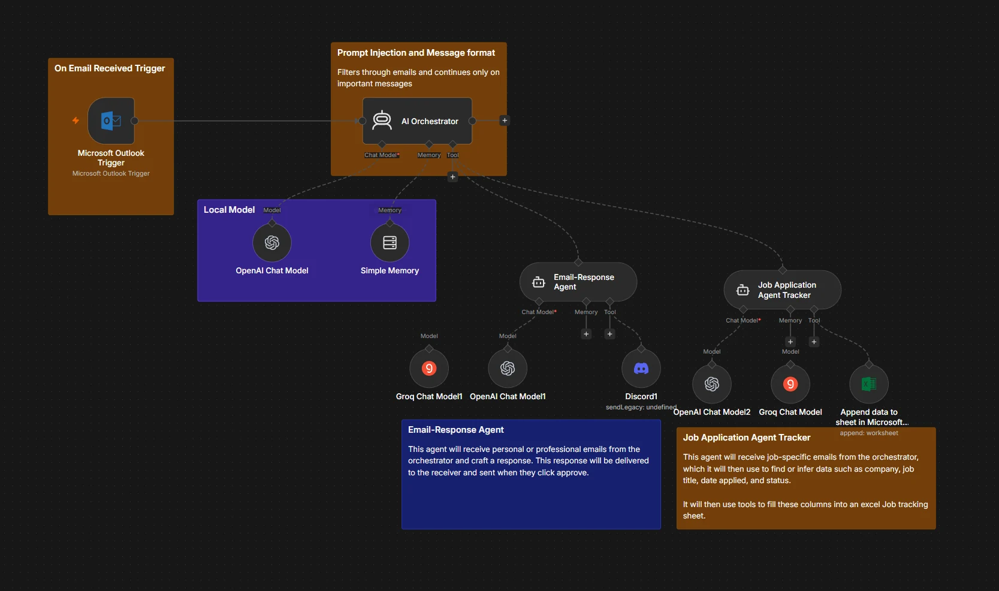
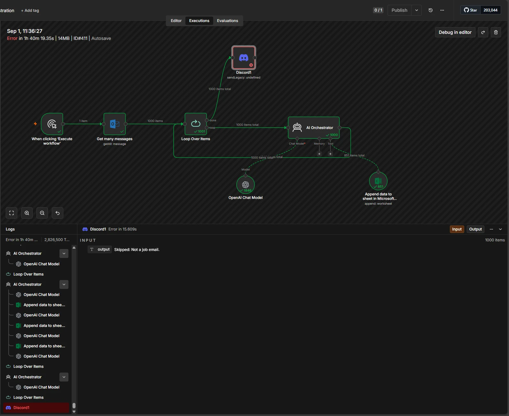
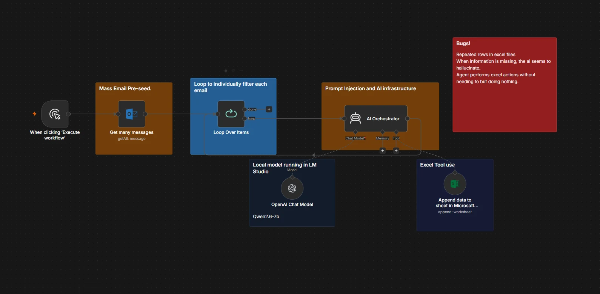

Three agents,
one real inbox
Every message that lands in my Outlook goes to an orchestrator running on a 7B model on my own machine. It classifies first and acts second: marketing and noise are dropped, and what survives is handed to a specialist. One drafts a reply and parks it in Discord until I approve it. The other pulls company, role, status and date out of job mail and appends a row to a tracking sheet. Nothing sends and nothing is written without passing a gate. This one runs against my actual job search.

Watch it run
Evidence from the runs


Why the failure list is on the page. A screenshot of a workflow that works proves very little. The interesting artefacts are the thousand-item execution and the three failure modes written next to it — a 7B model asked to extract structured fields will invent them when the source is silent, and the fix is tighter schema constraints and a null path, not a better prompt.
Classify first,
act second
The orchestrator's only job is deciding what a message is. Spam, marketing and anything unrelated get dropped before a specialist agent is ever invoked, which keeps tool calls and tokens off the majority of the inbox.
Nothing sends
itself
The reply agent drafts, then stops. The draft goes to Discord and waits for a human approve before it reaches anyone. Same principle as the plant-floor approval chain: the model proposes, a person commits.
Runs on my
own hardware
Qwen2.5-7B served by LM Studio on an OpenAI-compatible endpoint at localhost. No per-token bill on a thousand-message run, and a personal inbox never leaves the machine.
Free text into
a schema
Company, role, status, date applied, recruiter, next steps, requisition number — pulled from prose written by a hundred different sender templates, normalised against a fixed status lifecycle, and appended as a row.